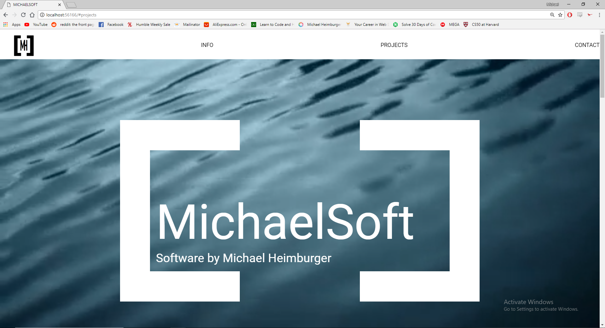

STOCK MARKET Developed in C# using OOP, this program allows the user to define a custom amount of stock classes assigned to a list and trade them on an ever-changing market.

TUSKANY VILLA WEBPAGE Developed with HTML5, CSS-Grid, and CSS-Flexbox this webpage was made as a project at WeCanCodeIt. The website features a modernist design and is fully responsive.

VIRTUAL PET SHELTER Developed using C# using OOP and inheritance, this program allows the user to manage a predefined list of pet classes who constantly require to be fed/watered/entertained via user inputs.
MICHAELSOFT.ORG Developed using HTML5 , CSS3 and Javascript with CSS-grid and FlexBox- This current site is always WIP and will be constantly updated. Right now this site uses javascript to randomly select 1 of 3 backgrounds for the index page.